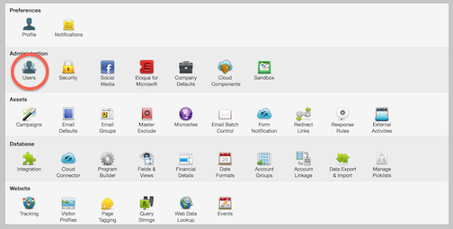
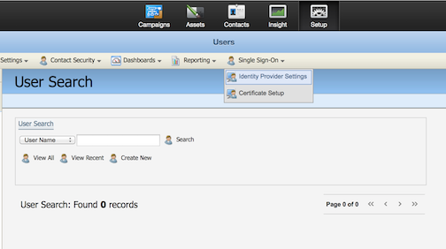
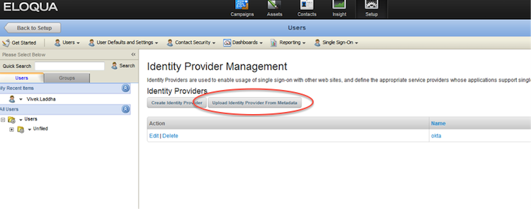
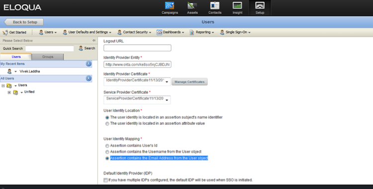

Sign in tho Eloqua. Select Setup > Management > User Management > Single Sign-On.
Then, navigate to Setup > Users > Single Sign-On.

Click Single Sign-On and select Identity Provider Settings on the submenu that displays.

Click the Upload Identity Provider from Metadata button, as shown below.

Enter Okta for the name of the identity provider.
Save the following metadata as an xml file. Click the Browse button and navigate to the location of this file.
Sign in to the Okta Admin app to have this variable generated for you.
Click the Save button.
Click Edit next to the identity provider you just created.

Select Assertion contains the Email Address from the User object under User Identity Mapping, as shown below.
Done!